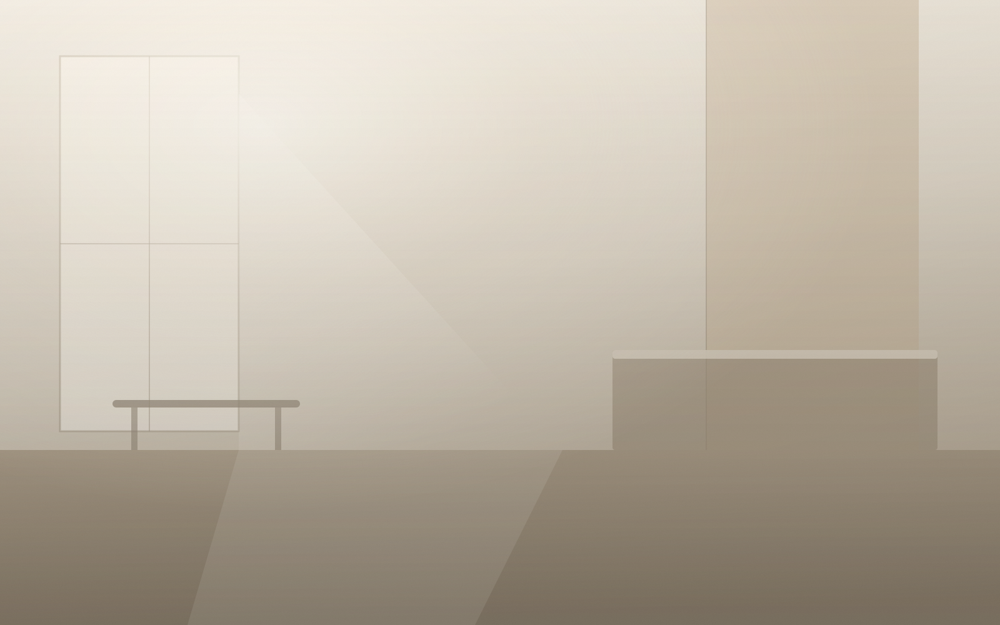

Implantes
Reposição unitária ou total, planejada digitalmente antes do procedimento.
Implantes
Odontologia estética e reabilitação oral
Planejamento digital antes de qualquer procedimento. Você vê o resultado projetado — e decide com o quadro completo na frente.
4,9 de 5 em 312 avaliações no Google
Cinco componentes, cada um em sua própria pasta com CSS e JS próprios.
A Navbar e o Hero acima são os componentes reais, montados por
tools/build.py a partir dos mesmos partials que
a Home vai usar na Fase 4 — não há uma segunda cópia da marcação.
Peso visual em ordem de decisão: imagem → título → CTA. O texto fica em um
painel sobre superfície própria em vez de direto sobre a foto, para que o
contraste do título seja garantido por token e não dependa da imagem que
entrar na Fase 4. A imagem declara width, height e
aspect-ratio, então reserva o espaço antes de carregar e não
empurra o conteúdo.
Base de Conhecimento · 03-ui-visual/visual-hierarchy.md: a ordem de peso
visual deve seguir a ordem de decisão de quem lê — com a ressalva, da
própria ficha, de que decidir O QUE priorizar é anterior e mais
importante que como comunicar essa prioridade.
A imagem é um placeholder vetorial gerado para esta fase, não fotografia. A Fase 4 exige imagem real — o componente já está preparado para recebê-la sem mudança de marcação.
Todas as variantes têm no mínimo 44px de altura. O
protótipo da Fase 2 media 42,6px e estava abaixo do piso — corrigido aqui.
A ação primária é deliberadamente maior que a secundária, e
:hover e :focus-visible recebem o mesmo
tratamento: um estado que só existe no mouse deixa teclado e toque sem
retorno.
Base de Conhecimento · 01-psicologia-cognitiva/fitts-law.md (Confidence 96%,
Adoption 97% — o par mais forte da Base junto de Hick's Law): tempo e erro
de seleção são função do tamanho e da distância do alvo; referência de
44×44px (iOS HIG) / 48×48dp (Material). A mesma ficha sustenta a ação
primária maior que a secundária.
O card não esconde informação atrás do hover: todo o texto
está visível em repouso, e o hover apenas eleva para sinalizar que é
clicável. Isso mantém o componente íntegro em toque, onde hover não existe.
O link cobre o card inteiro — alvo maior — mas seu texto continua sendo o
nome da especialidade, então o leitor de tela anuncia um destino com
sentido em vez de “leia mais”. O anel de foco é desenhado no card, via
:focus-within.
Base de Conhecimento · 07-motion/hover-exploratory-states.md: hover não
existe em interfaces touch puras e exige alternativa equivalente; WCAG 2.1
critério 1.4.13 exige que qualquer conteúdo revelado por hover também seja
disparável por foco de teclado. A solução aqui é anterior: não revelar
nada por hover.